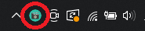
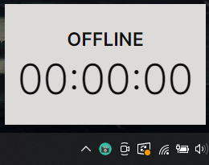
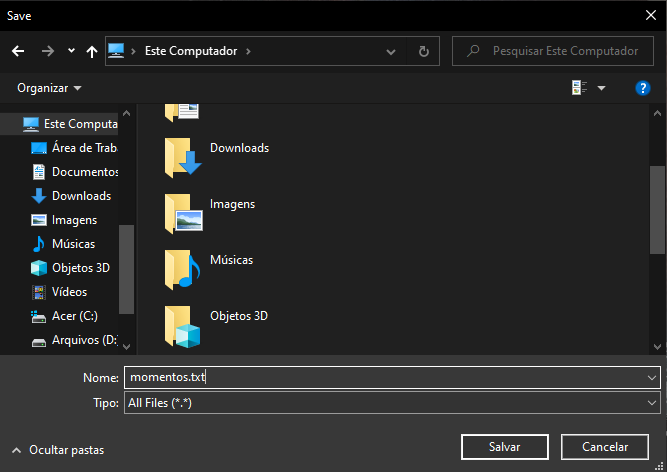
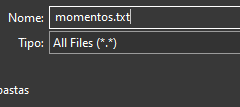
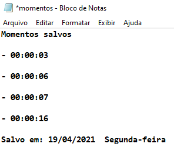

A atual versão do Jobles (1.0.2) ainda é uma versão de testes e um pouco limitada, contendo apenas algumas funções simples.
O jobles inicialmente foi pensado para ser um marcador de melhores momentos da sua live, fazendo com que você não precise assistir toda sua live novamente para encontrar os melhores momentos para criar um novo conteúdo, como um vídeo para o Youtube.
Ao iniciar o aplicativo, ele será aberto na sua bandeja de aplicativos (Tray).
Ao clicar no ícone do aplicativo, será aberta uma pequena janela logo acima do ícone do aplicativo
Essa janela é simplesmente um contador que você deve iniciar assim que sua live começar. Você pode iniciá-lo clicando sobre o contador ou pressionando as teclas de atalho Ctrl + PageUp.
Assim que você inicializar o contador você pode criar novos momentos. Para criar um novo momento basta pressionar as teclas de atalho Ctrl + PageDown.
Assim que você finalizar sua live, você pode finalizar o contador da mesma forma que iniciou, pressionando o atalho Ctrl + PageUp ou clicando sobre o contador
A partir daí, será aberta uma janela de diálogo onde você pode escolher o local onde você deseja salvar o arquivo.
É IMPORTANTE lembrar que, você deve salvar o arquivo como extensão de texto (.txt), mas corrigiremos esse problemas em próximas versões
Após isso, basta abrir o arquivo salvo para conseguir observar os pontos que você salvou da sua live.
